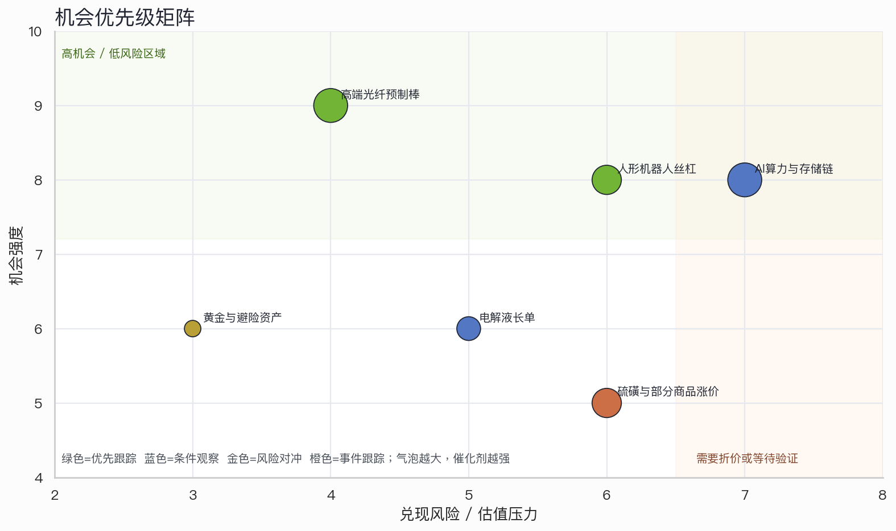
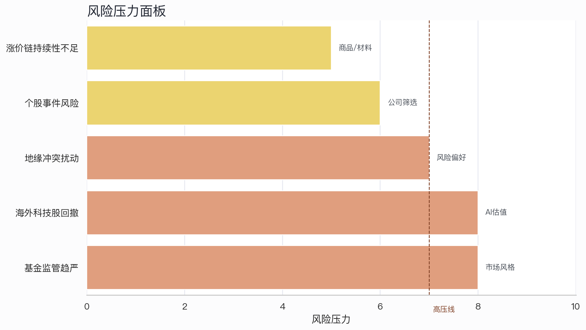

优先跟踪
中短期
高端光纤预制棒
上游材料 / 供给紧缺
投资人读法：最清晰的投资逻辑是“需求爆发 + 供给慢变量 + 上游利润占比高”。应优先验证价格持续性和拥有光棒产能的企业名单。
验证点：A2报价、扩产公告、锗等原材料价格、产能投向特种光纤的比例
这版不再把“文本提及次数”当成结论，而是把早盘材料转化为投资人可执行的线索地图：哪些值得优先跟踪、哪些只适合条件观察、哪些需要先折价处理风险。
纵轴是从原文证据推导的机会强度，横轴是兑现风险或估值压力；气泡越大，近期可验证催化剂越强。分数是投资框架下的线索分层，不是收益预测。


上游材料 / 供给紧缺
投资人读法：最清晰的投资逻辑是“需求爆发 + 供给慢变量 + 上游利润占比高”。应优先验证价格持续性和拥有光棒产能的企业名单。
验证点：A2报价、扩产公告、锗等原材料价格、产能投向特种光纤的比例
核心部件 / 高价值量
投资人读法：空间来自整机放量，壁垒来自精密加工。关键不是概念热度，而是量产节奏和深度绑定产业链的证明。
验证点：样机到量产节奏、客户定点、内螺纹精密磨削工艺、良率与价格
基础设施 / 存储约束
投资人读法：方向仍强，但应拆成算力底座、存储、光互联和封装载板等可验证环节，避免只交易宽泛AI叙事。
验证点：HBM/存储价格、算力中心交付周期、英伟达-SK/三星合作、海外科技股估值压力
公司订单 / 需求能见度
投资人读法：长单提升需求可见度，但仍需回到价格、毛利率和产能利用率验证，不能只看采购量。
验证点：执行价格、毛利率、产能利用率、客户集中度
宏观对冲 / 避险
投资人读法：黄金线索更像组合对冲资产，而不是产业成长主线；作用在于对冲地缘和美元利率不确定性。
验证点：央行购金节奏、实际利率、美元指数、地缘冲突升级
涨价链 / 成本传导
投资人读法：涨价弹性强但持续性不明。更适合跟踪资源端受益和下游成本压力，而不是直接外推长期景气。
验证点：进口渠道、国内产量、下游承受力、价格回落速度
公司事件 / 风险排除
投资人读法：派瑞股份ST、天德钰和杰普特减持不应放入机会池，应作为风险过滤器。
验证点：公告全文、减持节奏、基本面是否发生实质变化。
私募证券基金监测加强；公募赌押赛道、风格漂移、高位发行被点名。
应对：降低对单一赛道拥挤交易的依赖，关注风格切换和高位主题的回撤压力。
上周五纳指跌4.18%，标普500跌2.639%，美联储预期转鹰压制科技股。
应对：AI链仍可看产业趋势，但短线要加入估值和外盘风险折价。
伊朗向以色列发射导弹，以色列多地拉响防空警报。
应对：地缘冲突更影响风险偏好与避险资产，应避免把短期避险波动误读成产业趋势。
派瑞股份被实施其他风险警示；天德钰、杰普特披露减持。
应对：公司事件需要作为负面筛选项，不应混入主题机会池。
硫磺、鸡蛋、车规级存储芯片均出现涨价信息，但驱动来源不同。
应对：逐条拆解供需缺口、库存和成本传导，避免把所有涨价都视作同一类机会。
风险确认 · 个股事件风险落地，适合作为剔除或风险提示。
资金/情绪 · 近200家公司分红，对应年度分红919亿元；关注高股息情绪。
AI存储链 · 验证内存短缺和存储链催化能否继续强化。
供需验证 · A2光棒价格、扩产周期和原材料锗价格是关键验证点。
产业兑现 · 从技术突破转向客户绑定、良率和订单的验证。
公司兑现 · 新宙邦与宁德时代30万吨采购量需要跟踪价格和毛利率。
| 线索 | 数字 | 含义 | 投资用途 |
|---|---|---|---|
| 光纤预制棒 | 近550% | A2类预制棒报价涨幅 | 强供需约束线索，需跟踪价格持续性。 |
| 光纤预制棒 | 18-24个月 | 光棒扩产周期 | 供给慢变量是行情持续的核心前提。 |
| 人形机器人 | 19% | 行星滚柱丝杠价值量占比 | 说明丝杠是高价值量核心部件。 |
| AI/自动化 | 57.4% | 机器访问请求占比 | AI流量和自动化趋势强化基础设施需求。 |
| 存储链 | 数年 | 内存短缺预期 | 支持存储链景气，但需叠加估值风险。 |
| 黄金 | 19个月 | 央行连续增持黄金 | 组合对冲属性强于产业成长属性。 |
| 沪市分红 | 919亿元 | 未来一周分红金额 | 高股息与现金回报偏好可能受关注。 |
| 海外市场 | -4.18% | 纳指单日跌幅 | AI链短期估值和风险偏好压力。 |
非投资建议。 本网页只把用户提供的早盘文本转化为投资研究视角的候选线索，没有接入实时行情、估值、公告全文、成交量或外部事实核验。
页面中的分数用于排序和研究优先级，不代表目标价、涨跌幅预测或买卖建议。若用于真实投资决策，应补充价格、估值、基本面、公告原文和风险承受能力评估。